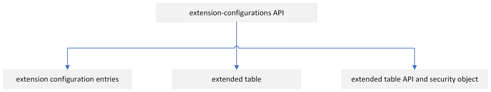
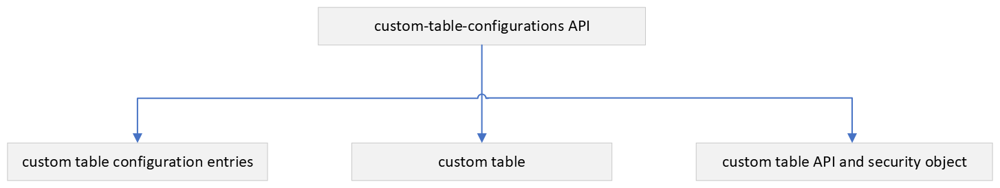

Use Schema Designer
Schema Designer provides a secure, flexible, and SaaS-compliant way to extend the Banner data model.
Schema Designer features a no-code/low-code interface for functional and administrative users, and offers robust APIs for developers. Schema Designer ensures safe and compliant extensibility. It supports Multi-Entity Processing (MEP) and allows institutions to manage data across multiple entities with ease. The solution integrates with Ellucian Experience and surfaces extended data through components such as More Info cards.
Schema Designer User Interface
The Schema Designer User Interface provides an intuitive dashboard to build extended and custom tables.
Home page
You can see a grid of all tables, both custom and extended, with details such as Table Name, Description, Banner Table, API Name, and Security Object.
A Search field is available on the Home page, allowing you to quickly find tables by entering their name or description. The search results dynamically update as you type.
Table details page
Clicking any table name link from the Home page opens the detailed view of that table. This page provides additional information about the table, including specific field details, data types, and configurations. You can view and manage fields within the table to tailor it according to your business needs.
Schema Designer Home page
The Home page in Schema Designer serves as the central dashboard for managing both extended and custom tables. You can access, view, and manage table details.
A Search field is available on the Home page, allowing you to quickly find tables by entering their Name or Description. The search results dynamically update as you type. The Import icon imports a published table that you want to use.
Tabs
| Extended | Custom |
|---|---|
| Extended | Displays extended tables, which enhance the existing baseline Banner tables. |
| Custom | Displays custom tables, which are independently created for unique business requirements. |
Grid view fields for extended tables
| Field | Description |
|---|---|
| Table Name | Name of the extended table. |
| Description | Brief description of the purpose of the table. |
| Banner Table | Indicates the extended baseline Banner table. |
| API Name | Name of the extended table API used for integration. |
| Security Object | Name of the security object name required to access the extended table API. |
| Export | Export an extended table. |
| Delete | Quick action to delete the table. |
Grid view fields for custom tables
| Field | Description |
|---|---|
| Table Name | Name of the custom table. |
| Description | Brief description of the purpose of the table. |
| API Name | Name of the custom table API used for integration. |
| Security Object | Name of the security object name required to access the custom table API. |
| Export | Export a custom table. |
| Delete | Quick action to delete the table. |
Extended tables and custom tables creation
You can add new tables by selecting either Extended Table or Custom Table from the Create button. To perform this, you must have access to the Schema Designer Experience Extension, granted through role setup or individual permissions in Experience Setup.
Create a new extended table
You can create a new extended table.
Procedure
-
Click the Application menu
 in the global navigation bar, at the top of the Experience dashboard.
in the global navigation bar, at the top of the Experience dashboard.
-
Add a key field.
-
Click the
 icon.
icon.
-
Click the
-
Add a data field.
-
Click the icon.
-
Click the
Results
Create a new custom table
You can create a new custom table.
Procedure
-
Click the Application menu in the global navigation bar, at the top of the Experience dashboard.
Results
View extended table and custom table details
You can view the data fields of the custom tables and extended tables from the Schema Designer Home page.
Procedure
Edit the extended table details
You can view and manage the data fields of extended tables from the Schema Designer home page.
Procedure
-
Add a data field.
-
Click the icon.
-
Click the
Edit the custom table details
You can view and manage the data fields of custom tables from the Schema Designer Home page.
Procedure
-
Add a data field.
-
Click the icon.
-
Click the
Schema Designer APIs
Schema Designer offers robust, SaaS-safe APIs for creating, managing, and migrating extended and custom tables through RESTful endpoints, enabling secure integration and automation across environments.
Extended table and extended table API creation
If you have data requirements to meet your unique business needs to extend an existing Banner-delivered table, you can create an extended table in BAN_EXTENSIONS schema.

Extension of Banner schema with your own data and APIs
extension-configurations API
You can use the extension-configurations API to create, modify, or delete an extended table and extended table API.
You can also use the extension-configurations API to create and manage the extension configurations to create the extended table and a specification-driven API is generated for the extended table. The extension-configurations API is available in the Banner Ethos Integration API application.
For more information, see Extension Configurations: extension-configurations.
One-to-Many feature
- True: The extended table supports one-to-many relationships with the baseline table.
- False: The extended table does not support one-to-many relationships with the baseline table.
Features of extended table API
Extended table APIs support all methods.
- GET ALL, GET by ID, create (POST), update (PUT) and delete (DELETE) methods.
- API paging parameters – limit and offset.
- Semantic versioning standards with multiple major and minor version updates.
- Filters on all data model schema properties.
- Properties data types such as string, object, array, date, and date-time.
- Change notifications in the form of Banner Event Publisher events.
- Banner Data Privacy.
- MEP-enabled institutions.
- Defining a named query for the extended table API.
- Creating an alternative resource representation on an existing Ellucian delivered resource.
- Defining an array within an array data type.
Naming conventions
Following a naming convention for your extended resources ensures that they do not conflict with Ellucian delivered resources in future releases.
Extended table names
- Prefix the name of the extended table with the letter x. For example, xnextofkin.
- Using a prefix to name the extended table ensures that they are unique.Note: The table name can have up to 30 characters. The column names need not be prefixed with extended table name.
API names
- Prefix the name of the API with the letter x- followed by the extended table name. For example, x-nextofkin.
- If the name of the API is not provided in the configuration, the system generates the name prefixed with x-, followed by the name of the extended table.
Without a unique prefix, an API with an identical name could be delivered with a future Banner Ethos API release and could overwrite your extended resource.
Create an extended table and extended table API
If you have data requirements to meet your unique business needs to extend an existing Banner delivered table, you can create an extended table in BAN_EXTENSIONS schema.
Before you begin
Procedure
Edit an extended table and extended table API
If you need to modify specific metadata attributes of an existing extended table, you can use the extension-configuration-revisions API. This API allows you to update specific properties of the extended table without deleting it or creating a new one.
Before you begin
Procedure
Provision the extended table API
Update the owned resources to provision the extended table API in Ethos Integration.
Procedure
Business events for extended table
To publish a business event associated with your extended table API, a new business event is created if the name is included in the creation of extended table.
- The event is created in a disabled state by default.
- The created event name generated will be prefixed with EXTN.ExtendedAPI.
- If no event name is provided, the system defaults to EXTN.ExtendedAPI.{TableName}.
- To start publishing events, you must manually enable it in the Business Events UI.
- Business events are to be consumed by subscribing applications from Ethos Integration. To subscribe the newly added business event, see Subscribe to business events.
Surface extended data in the More Info section
After you create the extended data table and the relevant data using the extension-configurations API, the next step is to surface this extended data in the More Info section. The extension-mappings API becomes a pivotal tool.
This process ensures a seamless integration of extended data into the Banner Admin interface, enriching the user experience and allowing for efficient management of data directly from the More Info section.
Establish the mapping of the Banner Admin page
Use the extension-mappings API to establish the mapping of the Banner Admin page and the extended table you want to view and manage the extended table data through the user interface in the More Info section. The extension-mappings API is available in the Banner Ethos Integration API application.
About this task
You can secure the pages and ensure that access to extended table data is properly controlled and aligned with existing security protocols.
Procedure
OAuth support for extended table APIs
Enhanced security measures have been incorporated for API access starting from the Banner Integration API 9.32 release.
These security measures are primarily for extended table APIs. To use these APIs through OAuth authentication, you need special authorization and approval for whitelisting purposes.
API Whitelisting
API whitelisting includes the approval and authorization of APIs for OAuth authentication usage. Unauthorized efforts to access non-whitelisted APIs without proper authorization will generate an error message, indicating that the resource is inaccessible through OAuth.
Enable OAuth for Extended table API
When creating a new extended table API using the extension-configurations API, the API ensures that the oauthAllowed flag is set to true by default always.
This critical step is necessary for whitelisting the extended table API created for the extended tables, enabling OAuth authentication. This is vital because all API calls through the Experience UI rely on the OAuth mechanism for surfacing the extended data.
- extension-configuration
- custom-table-configurations
- extension-mappings
Configure LOV for extended table data
Administrators can create extended tables against Banner baseline tables using the Schema Designer APIs and seamlessly integrate extended data into the More Info section of the Banner Admin page.
About this task
Use either a POST request method of extension-configurations when defining a new data column of the extended table to be configured as LOV or use the PUT request method of extension-configurations to update/modify the extended data column of the existing extended table with the properties of the extension-configurations API as mentioned below:
Procedure
Custom table and custom API creation
If you have data requirements to meet your unique business needs to create a custom table other than the Banner delivered table, you can create a custom table in BAN_EXTENSIONS schema.

Extension of Banner schema with your own data and APIs
custom-table-configurations API
You can use the custom-table-configurations API to create, modify, or delete a custom table and custom table API.
See the Open API documentation for the supported methods and schema properties of the custom-table- configurations.
You can also use the custom-table-configurations API to create and manage the custom table configurations to create the custom table and a specification-driven API is generated for the custom table. The custom-table-configurations API is available in the BannerEthos Integration API application.
Table-level Auto-Increment feature
The custom-table-configurations API provides an auto-increment feature for custom tables, which can be enabled by setting the requiresAutoIncrement property to true. This setting is applied during the configuration of the custom table using the custom-table-configurations API.
After enabling the auto-increment feature, the API automatically adds a new column to the custom table. This column name pattern is <TableName>_SEQUENCE_NUM, where <TableName> is the name of your custom table. The column is specifically designed to hold values in an incremental sequence for each new record inserted into the table, ensuring that each entry is uniquely identified.
Additionally, this auto-increment column becomes an integral part primary key configuration of the table. It is combined with any other key columns you have specified to form a composite primary key. This ensures data integrity and uniqueness across all records within the custom table.
You can use the auto-increment feature to streamline data management and enhance the reliability of your custom tables without manual intervention for sequence number generation.
Column-level Auto-Increment feature
In addition to table-level support, you can now configure auto-increment at the column level.
- attributeAutoIncrement
- attributeStartingValue
- attributeIncrementStep
This gives more flexibility to generate numbers on any column, making it easier to follow your business rules or match old numbering patterns. If a starting value or increment step is not provided, the system applies the defaults (start = 1, step = 1).
Features of custom table API
Custom APIs supports all methods.
- GET ALL, GET by ID, create (POST), update (PUT) and delete (DELETE) methods.
- API paging parameters – limit and offset.
- Semantic versioning standards with multiple major and minor version updates.
- Filters on all data model schema properties.
- Properties data types such as string, object, array, date, and date-time.
- Change notifications in the form of Banner Event Publisher events.
- Banner Data Privacy.
- MEP-enabled institutions.
- Defining a named query for the custom table API.
- Creating an alternative resource representation on an existing Ellucian delivered resource.
- Defining an array within an array data type.
Naming conventions
Following a naming convention for your custom resources ensures that they do not conflict with Ellucian delivered resources in future releases.
Custom table names
- Prefix the name of the custom table with the letter x. For example, xmaterial.
- The second letter of the custom table name must be one of the following characters: [f, g, n, p, r, s, t].
- Using a prefix to name your custom table ensures that they are unique.
-
Note: The table name can have up to 30 characters. The column names need not be prefixed with custom table name.
API names
- Prefix the name of the API with the letter x followed by the custom table name. For example, x-xmaterial.
- If the name of the API is not provided in the configuration, the system generates the name prefixed with x-, followed by the name of the custom table.
Without a unique prefix, an API with an identical name could be delivered with a future Banner Ethos API release and could overwrite your extended resource.
Create a custom table and custom API
The user who needs access to the custom-table-configurations API must be assigned with the security object delivered (API_CUSTOM_TABLE_CONFIG).
Procedure
Edit a custom table and custom API
If you need to modify specific metadata attributes of an existing custom table, you can use the custom-table-configuration-revisions API. This API allows you to update certain properties of the custom table without deleting it or creating a new one.
Before you begin
Procedure
Provision the custom table API
Update the owned resources to provision the custom table API in Ethos Integration.
Procedure
Business events for custom table
To publish a business event associated with your custom table API, a new business event is automatically created when the custom table is created.
- The event is created in a disabled state by default.
- The automatically created event name generated will be prefixed with CSTM.CustomAPI..
- If no event name is provided, the system defaults to CSTM.CustomAPI.{TableName}.
- To start publishing events, you must manually enable it in the Business Events UI.
- Business events are to be consumed by subscribing applications from Ethos Integration. To subscribe the newly added business event, see Subscribe to business events.
Advanced capabilities
Schema Designer supports advanced features to meet complex institutional needs. It enables Multi-Entity Processing (MEP) to manage data across entities, allows migration of schema configurations across environments using artifact APIs, and provides batch APIs to handle large-scale data creation and updates efficiently.
Multi-Entity Processing (MEP) support for Schema Designer APIs
The Schema Designer APIs support Multi-Entity Processing (MEP), also known as Shared Technology Platform (STP).
If you create an extended table and its corresponding API from a baseline table with MEP enabled, the extended table will automatically be enabled with MEP.
For more information, see Create an extended table and extended table API.
To enable MEP for a custom table, you can use the optional MEP Indicator whose default value is set to N.
If you create a custom table and custom API with the MEP Indicator value set to Y, the custom table will have the VPDI_CODE column.
If you create a custom table and custom API with the MEP Indicator value set to N or you did not pass the optional property, the custom table will have tablename_vpdi_code. However, the MEP Indicator value is always null.
For more information, see Create a custom table and custom API.
Migrate artifacts between tenants: Export/Import process
Organizations often build and test Schema Designer configurations such as extended/custom tables, APIs, and extension mappings in a non-production tenant because manually recreating these configurations in production is time-consuming and error-prone.
- One-click extraction - A single call to the schema-extensibility-artifacts endpoint gathers all selected artifact types—extension-configurations, custom-table-configurations, and extension-mappings—and returns them as ready-to-use request payloads
- Portable payloads - The exported JSON strictly conforms to the create-batch schema of each target API. No manual transformation is required.
- Batch creation in production - These payloads are posted to each artifact’s/batches endpoint, which automatically recreates:
- All tables and columns
- Security objects and business events
- UI mappings
- OpenAPI specification registration
- End-to-end integrity - After import, each artifact behaves exactly as in the test tenant:
- Extended/custom tables are fully created
- APIs function as expected
- Extended fields appear in the More Info section of Banner admin pages
- Security objects are active
- Business events are created (in disabled state by default)
- OpenAPI specifications are registered in the API Registry
The Export/Import feature offers a repeatable, tenant-agnostic pipeline to migrate all Schema Designer configurations—including metadata, UI mappings, and security objects—from test to production with no manual edits and minimal downtime. Post-import, all components function exactly as they did in the test environment.
Export Schema Designer artifacts
This task provides guidance on how to use the schema-extensibility-artifacts API to export artifact configurations such as custom table configurations, extension configurations, API specifications, and extension mappings from a test tenant. You can import the exported configurations into another environment, such as production, to replicate the Schema Designer setup.
About this task
Procedure
Batches enabled APIs for Schema Designer
The Schema Designer table APIs support a Batches API feature that allows users to perform bulk creation and update operations on custom and extended table APIs through a single synchronous API call.
Using this feature, you can submit multiple records in one call using the /batches endpoint for the respective custom or extended table API. The API processes each record sequentially and returns a detailed response indicating success or failure per item.
This approach improves efficiency, simplifies integration logic, and supports a mix of inserts and updates within a single request.
Enable Batches API for Schema Designer APIs
This task provides guidance on enabling the Batches API feature for Schema Designer table APIs.
About this task
Procedure
Supplemental Data Engine (SDE) migration to Schema Designer APIs
The migration from the Supplemental Data Engine (SDE) to the Schema Designer APIs in Banner enables institutions to modernize their approach for storing and managing user-defined data.
The Supplemental Data Engine (SDE) allows you to add user-defined columns to the database and pages without user-maintained modifications. However, it faces challenges with Multi-Entity Processing (MEP) support and performance due to its single large table structure.
This migration enables custom data management, full control over data, and simplified table extensions using Schema Designer UI and Schema Designer APIs. These features enhance user interaction through Banner administrative pages.
Before initiating the migration process, ensure that all required configuration and security prerequisites are properly completed.
- Grant access to Banner security objects
- Supplementary Data Engine (SDE) migration configuration
Before You Begin
Before starting the migration, ensure that you are familiar with the core SDE configuration tables and how your Banner SDE data is structured. The migration will succeed only if all eligibility criteria are met.
| Table | Role in Migration |
|---|---|
| GOBSDTB | Defines which Banner tables have SDE configurations and their primary key structure. |
| GORSDAM | Stores attribute-level configuration: discriminators, LOVs, overrides, ranges, validations. |
| GORSDAV | Holds actual SDE data values per record (deleted during cleanup, not validated pre-migration). |
| Table | Role in Migration |
|---|---|
| GTVSDTB | Table setup — define which tables participate in SDE |
| GOASDMD | Attribute configuration — define SDE attributes, discriminators, LOVs, ranges |
| GOADISC | Supplemental Data Discriminators — define discriminator codes (Method & Validation) |
Migration Validation Overview
GURMSDC validates each SDE table through three sequential checks. These checks are enforced in the order shown below. A failure at any step blocks migration for that table and displays an error message.
| SDE Table / Object | What Is Validated |
|---|---|
| GOBSDTB | SDE configuration exists AND Primary Key does not use to_char() on non-numeric columns |
| GORSDAM | Discriminator Method = "I" AND Validation = NULL; no unsupported features present (substitute, override, range, LOV fields, validation rules, GORRSQL Rules) |
|
DBA_OBJECTS (BAN_EXTENSIONS) |
Extension table does not already exist in the BAN_EXTENSIONS schema |
When all three steps pass, GURMSDC displays the following message: {TableName} configuration migration validated successfully.
Step 1: GOBSDTB Validation
GOBSDTB is the first table checked. It must contain a configuration record for the target table, and the Primary Key definition must comply with the to_char() rule.
| Check | Requirement | GURMSDC error if fails |
|---|---|---|
| SDE configuration exists | Table must have a record in GOBSDTB | SDE configuration not found for table {TableName}. |
| PK – non-numeric columns | to_char() must NOT be used on non-numeric PK columns | {TableName} cannot be migrated because to_char() function is not allowed in primary key for non-numeric column. |
Step 2: GORSDAM Attribute Metadata Validation
GORSDAM holds all attribute-level configuration. Two sub-checks are performed: discriminator rules and unsupported feature detection.
Every discriminator on the table must meet these conditions:
| Check | Column | Requirement | GURMSDC error if fails |
|---|---|---|---|
|
Discriminator Method Discriminator Validation |
For the GORSDAM_SDDC_CODE, the GOBSDDC_METHOD GOBSDDC_VALIDATION |
Must equal 'I' (Index) | {TableName} cannot be migrated because only SDDC with METHOD = 'I' and VALIDATION = NULL is supported. |
Unsupported Features
If any of the following columns is non-NULL, the table is NOT eligible. Remove the unsupported configuration in GOASDMD before re-running GURMSDC.
| GORSDAM Column | Description | GURMSDC error if not NULL |
|---|---|---|
| GORSDAM_ATTR_TYPE | Substitute feature used | {TableName} cannot be migrated because substitute is not supported. |
|
GORSDAM_LOV_LOW_RANGE GORSDAM_LOV_HIGH_RANGE GORSDAM_LOV_LOW_SYSDATE_IND GORSDAM_LOV_HIGH_SYSDATE_IND |
For range validation | {TableName} cannot be migrated because range is not supported. |
|
GORSDAM_LOV_TABLE_OVRD GORSDAM_LOV_ATTR_OVRD GORSDAM_LOV_CODE_TITLE GORSDAM_LOV_DESC_TITLE |
Override for LOV Fields | {TableName } cannot be migrated because override is not supported. |
|
GORSDAM_GJAPDEF_VALIDATION GORSDAM_SQL_SQPR_CODE GORSDAM_SQL_SQRU_CODE |
GJAPDEF validation routine SQL process generating validation type SQL rule generating rule type |
{TableName} cannot be migrated because rules and validations are not supported. |
Step 3: BAN_EXTENSIONS Uniqueness Check
The extension table generated for the SDE table must not already exist in BAN_EXTENSIONS. If it does, GURMSDC will not overwrite it.
| Requirement | GURMSDC error if fails |
|---|---|
| Must NOT exist in BAN_EXTENSIONS schema | The extended table {extendedTableName} is already present in ban_extensions schema for {TableName}. |
Run the migration of Supplemental Data Configurations (GURMSDC) process
Migration of Supplemental Data Configurations (GURMSDC) is a Banner batch process that migrates Supplemental Data Engine (SDE) configuration metadata to the schema extensibility framework.
Before you begin
- Identify the tables to be migrated.
- List all SDE baseline tables that you plan to migrate.
- Confirm whether you will migrate all tables from GOBSDTB, or only specific tables.
- Identify the attributes to be migrated.
- Review the user-defined columns in each SDE table.
-
Check that attributes meet eligibility rules (data types, primary key constraints, mapping requirements).
About this task
Procedure
Review the GURMSDC process
You must review the results of the GURMSDC migration process to verify if the migration was successful.
Procedure
- Access the Saved Output Review (GJIREVO) page.
- Enter GURMSDC in the Process field.
- Select a file in the File Name field.
Results
Error messages
A list of error messages and definitions that you can encounter when you run the GURMSDC process.
| Error Message | Description |
|---|---|
| SDE configuration not found for table {TableName}. | The Supplemental Data Engine (SDE) configuration for the table is missing, so it cannot be processed in Schema Designer. |
| {TableName} cannot be migrated because substitute is not supported. | There are attributes that use the substitute feature, which is not supported by Schema Designer. |
| {TableName} cannot be migrated because override is not supported. | The override configuration for the attributes defined for table is not supported in Schema Designer. |
| {TableName} cannot be migrated because rules and validations are not supported. | Schema Designer does not support the rules and validations defined for the attributes for the table. |
| {TableName} cannot be migrated because range is not supported. | The range feature used in the attributes for the table is not supported by Schema Designer. |
| {TableName} cannot be migrated because only Supplemental Data Discriminator Code (SDDC) with METHOD = ''I'' and VALIDATION = NULL is supported. | Only SDDC records with METHOD = 'I' and no validation value can be migrated. |
| {TableName} configuration migration validated successfully. | The configuration for the table has been successfully validated and is compatible with Schema Designer. |
| {TableName} cannot be migrated because to_char() function is not allowed in primary key for non-numeric column. | The use of to_char() in a primary key on a non-numeric column is not allowed for the migration. |
| The extended table {extendedTableName} is already present in ban_extensions schema for {BannerTableName}. | The extended version of the table already exists in the ban_extensions schema for the specified entity, so duplication is not allowed. |
Run the Migration of Supplemental Data Values (GURMSDV) process
Migration of Supplemental Data Values (GURMSDV) is a Banner batch process that migrates Supplemental Data Engine (SDE) data values to the schema extensibility framework tables. This process ensures that existing user-defined data is preserved, accessible through extensible APIs, and available in configurable UI components within Banner administrative pages.
Before you begin
- Ensure that all required configurations have been migrated using GURMSDC.
- Identify the tables to be migrated.
- List all the SDE baseline tables that you plan to migrate.
- Confirm whether you will migrate all tables from GOBSDTB, or only specific tables.
- Review the attributes and data integrity.
- Check for nullability, data type, and length consistency between SDE and the extensibility tables.
- Verify that primary key structures are intact and match the target tables.
Procedure
Review the GURMSDV process
You must review the results of the GURMSDV migration process to verify if the migration was successful.
Procedure
- Access the Saved Output Review (GJIREVO) page.
- Enter GURMSDV in the Process field.
- Select a file in the File Name field.
Results
Error messages
A list of error messages and definitions that you can encounter when you run the GURMSDV process.
| Error Message | Description |
|---|---|
| SDE Data can not be migrated as SDE configuration not migrated to GORRSDE for the table {TableName} | The Supplemental Data Engine configuration for the table has not been migrated to GORRSDE, so the data cannot be processed. First, run the GURMSDC process for the table. |
| Total number of records migrated for the table {TableName} | Indicates the number of records successfully migrated for the table. |